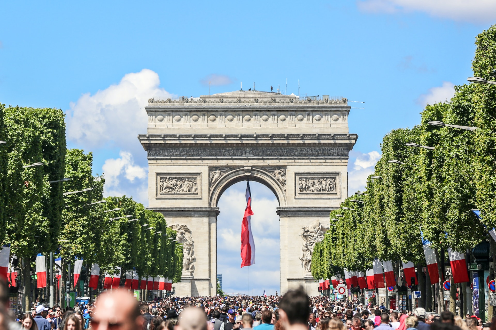
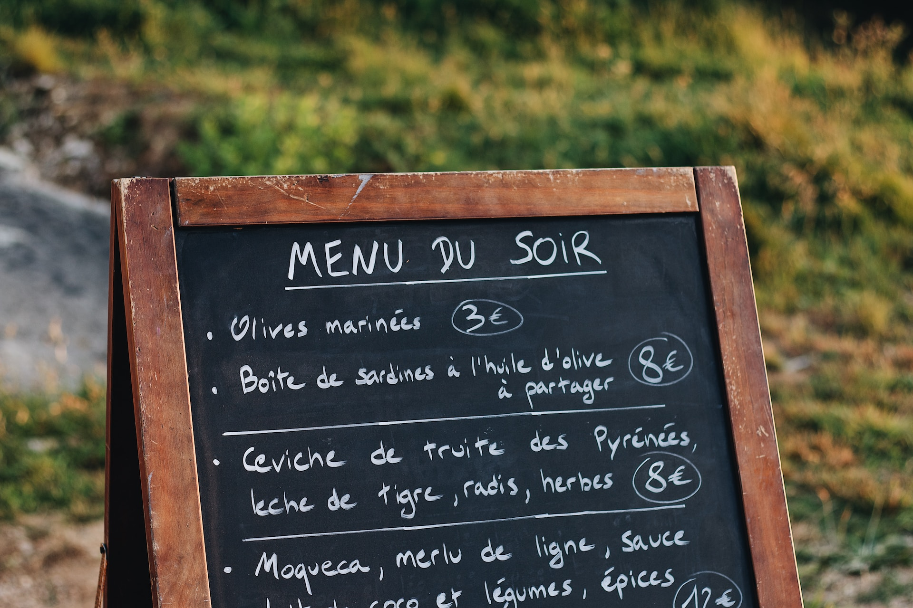
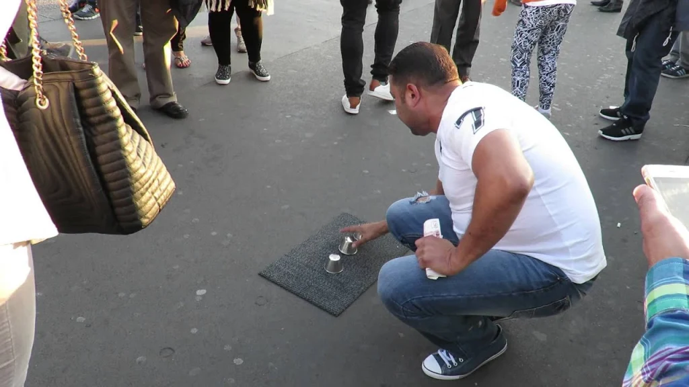
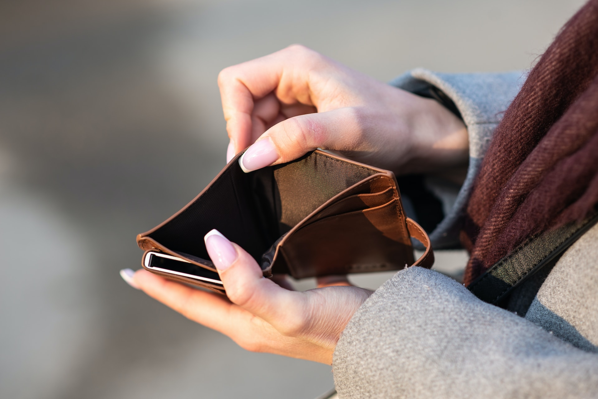

Whether you are a visitor or planning to reside in the city, Paris has everything you need for an enchanting experience. Known as the fashion capital of the world, it boasts a remarkable history of art and culture. From elegant museums to quaint cafes and gardens, there is no shortage of activities to immerse yourself in French culture. Despite what you may have heard or read, here are some hidden truths about Paris that you'll regret not knowing before visiting the City of Love.
1. Be prepared for the crowds
Paris, the city of love and light, is known for its breathtaking architecture, mouthwatering cuisine, and vibrant culture. However, with millions of tourists flocking to the city every year, the crowd problem has become a pressing issue that should be taken seriously. Especially during peak season (July to August), the influx of tourists is overwhelming and makes it hard to enjoy the city's attractions without feeling rushed or suffocated by the crowds. Museums and monuments are often packed, and getting around the city becomes a hassle, causing frustration and anxiety. The best way to avoid this situation is by planning your visit during off-peak seasons. Spring (March to May) and Fall (September to November) are ideal times to visit Paris. During these months, the city is quieter, the weather is mild, and the crowds are not as intense. The atmosphere is much more pleasant, and you can take your time to explore Paris and appreciate its beauty.
2. Watch out for pickpockets
Pickpocketing is a common problem in Paris, especially in crowded tourist areas such as the Eiffel Tower, the Louvre Museum, and the Champs-Élysées. Pickpockets usually target distracted tourists, especially those carrying expensive cameras and wearing visible jewelry. They also tend to work in teams, creating distractions to steal from unsuspecting tourists. To avoid pickpocketing in Paris, always be aware of your surroundings, and never leave your belongings unattended. Always keep your bags and wallets close to you, and consider wearing a cross-body bag or backpack instead of a handbag. Don't carry too much cash and avoid showing off valuable items in public. It's also essential to be cautious in public transportation, where pickpockets can take advantage of crowded spaces. Keep your belongings close to you, and be wary of people who try to get too close. Be careful when using your phone, as thieves can quickly grab it out of your hand.
3. Mind the language barrier
One of the biggest challenges tourists face when traveling to Paris is the language barrier. As the locals converse in rapid French, visitors may find themselves feeling lost and isolated. But fear not, for there are ways to break through this barrier! Firstly, it's important to keep an open mind and show patience towards the locals. Try to learn basic French phrases, such as "Bonjour" (hello) and "Merci" (thank you), and be polite when attempting to communicate. If you're having difficulty communicating verbally, don't be afraid to use non-verbal communication such as gesturing or using a translation app. Also, be sure to bring a French phrasebook or download a language app on your phone beforehand to help you navigate through everyday situations.
4. Beware of scams
One of the most common scams in Paris is the "gold ring" scam, where a stranger approaches you claiming to have found a gold ring and offers to sell it to you at a discounted price. This ring is usually fake and worthless, and once you've purchased it, the scammer will disappear, leaving you out of pocket. Another popular scam in Paris is the "broken camera" or "distraction" scam, where a group of scammers will approach you and ask you to take a photo of them. While you're doing so, one of the scammers will "accidentally" drop their camera or spill something on you, distracting you long enough for another to pickpocket you. To avoid these scams, it's important to stay vigilant and not let your guard down. Be wary of strangers approaching you and offering you anything, and keep a close eye on your valuables at all times. If someone does try to scam you, don't engage with them and walk away as quickly as possible.
5. Pay attention to your budget
Paris, the city of love and lights, is a must-see destination on many people's bucket lists. However, the cost of a trip to the French capital can quickly add up and put a strain on your wallet. From expensive hotels to high-priced restaurants, Paris has a reputation for being one of the most costly cities in the world. But don't let that discourage you from experiencing all the beauty that Paris has to offer! One way to save money when traveling to Paris is by choosing to visit during the low season. Not only are flights and accommodation cheaper, but you'll also avoid the crowds that flood the city during the high season. Additionally, it's important to plan ahead and do your research when it comes to where to eat and what activities to do. Skip the tourist traps and head to local eateries and markets to indulge in delicious French cuisine without breaking the bank. When it comes to accommodations, consider booking a rental apartment through sites like Airbnb or Vrbo. This way, you'll have a kitchen to cook your own meals, saving money on eating out, and also experience Paris like a local. Lastly, don't forget to take advantage of free attractions such as walking tours, public parks, and museums with free entry days.
6. Weather is important!

When it comes to weather in Paris, one must always be prepared for the unexpected. With a temperate climate, the city is known to experience a range of weather conditions throughout the year. Summer is undoubtedly the most popular time to visit Paris, with warm and sunny days that make outdoor activities enjoyable. The temperature during the peak summer months, June to August, usually ranges between 20°C and 25°C. However, if you're planning a visit during the autumn months, be sure to pack an umbrella and a waterproof jacket as rainfall is frequent. The temperature begins to drop in September, with the average temperature ranging from 10°C to 20°C. If you're planning to visit Paris in winter, don't let the chilly weather deter you from experiencing the city's magic. Be prepared to pack warm clothing, including coats, hats, and scarves as temperatures can fall below freezing. Snow is rare, but not impossible, so be ready to capture those picture-perfect moments! As for the springtime, it is known to be Paris' shoulder season where temperatures slowly begin to rise and the rainfall decreases. This season sees fewer tourists than the summer, making it an ideal time for travelers who prefer a quieter Paris.
7. Respect local customs and etiquette
When travelling to Paris, it is crucial to familiarize oneself with the local customs and etiquette to ensure a smooth and enjoyable experience. As a tourist, it is important to respect and adapt to the French culture, and abide by their norms to avoid offending the locals. This is essential for establishing a positive relationship with the Parisians and making a positive contribution to the community as a whole. One of the fundamental customs that a tourist must adhere to when visiting Paris is to learn the French language, even if it is only the basic greetings and phrases. The French language holds great value and is a sign of respect for the local culture. Greetings like "Bonjour" (Good morning), "Merci" (Thank you) and "Au revoir" (Goodbye) are simple gestures that demonstrate a genuine interest in their culture. Another important aspect of French culture is punctuality. Punctuality is crucial in the French culture, and it is important for a tourist to respect it. Arriving late is often considered impolite, and it can cause misunderstandings, and may even lead to negative reactions. Furthermore, dressing appropriately is also important when it comes to respecting local customs. Paris is a city that is known for its fashion, and it is essential for tourists to dress decently. Revealing clothing should be avoided as it is often frowned upon in public places. In addition to respecting punctuality and dress codes, another vital part of French culture is table manners. French cuisine is well-known worldwide, and there are many rules that are strictly followed in France. Some examples include not placing one's elbows on the table, eating bread in small portions, and using cutlery in the correct order. It is important to be mindful of these customs and not deviate from them while dining in public places.